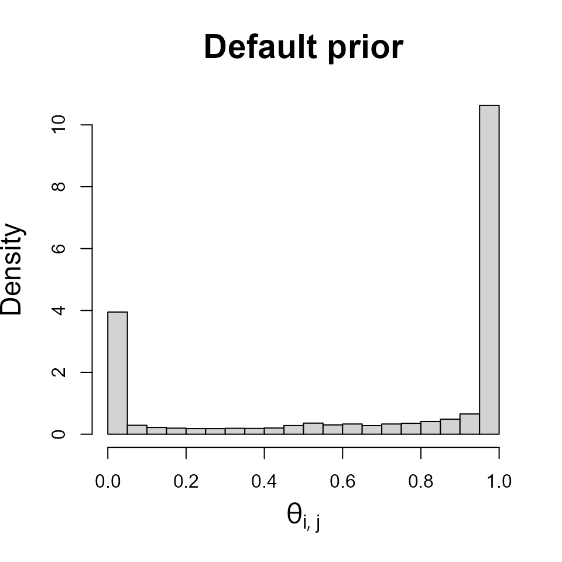
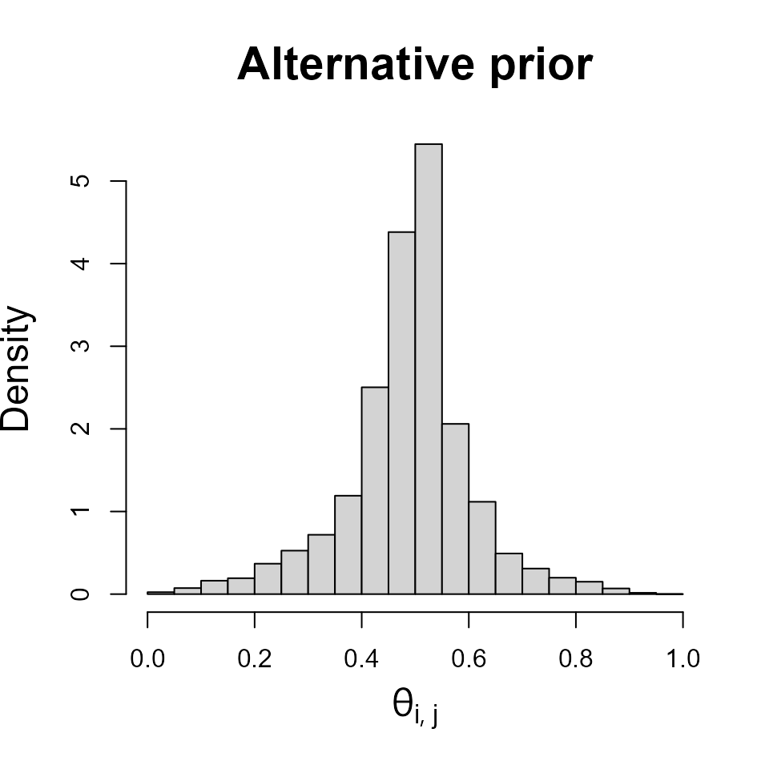
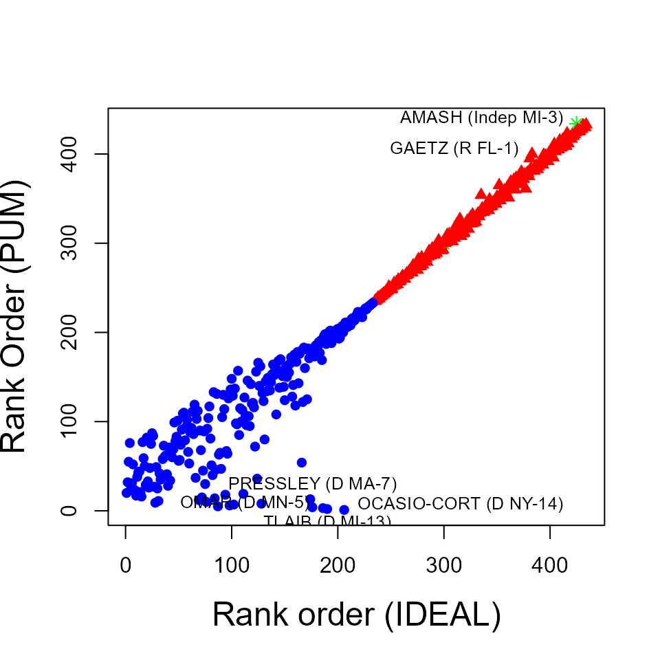
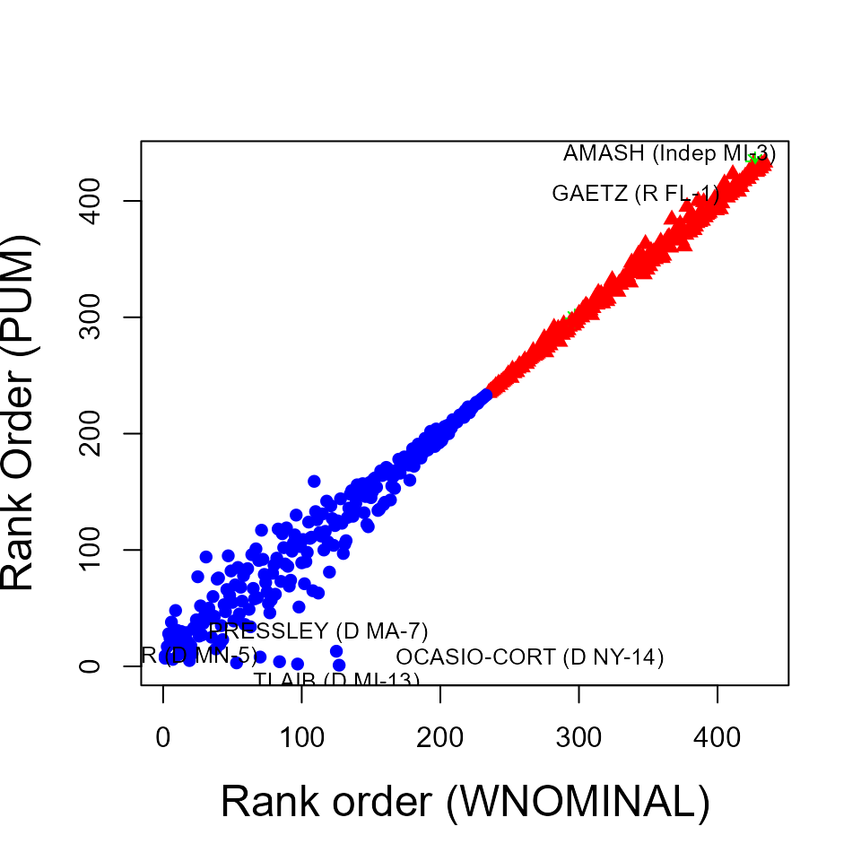
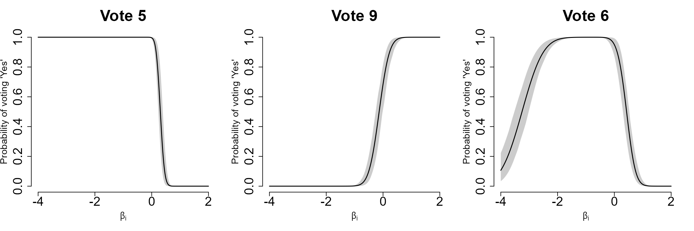

pumBayes`:` Bayesian Estimation of Probit Unfolding Models for Binary Preference Data
Skylar Shi, Abel Rodriguez and Rayleigh Lei
vignettes.RmdThe Probit Unfolding Model
The probit unfolding model (PUM for short, Lei and Rodriguez, 2024a) is a one-dimensional factor analysis model closely related to item response models (e.g., see Fox, 2010). PUM can be used to estimate individual’s preferences from binary choice data, with one canonical application in political science being the recovery of ideological scores from voting records. A key feature of PUM is that, unlike traditional item response theory models, it allows for response functions that are non-monotonic on the preferences/latent traits.
The probit unfolding model can be motivated through the use of random utility functions. To ground our presentation of the model, we describe it terms of the usual political science terminology. In this context, we typically have \(I\) legislators/judges who vote in favor or against \(J\) issues. PUM assumes that the preferences of legislator/judge \(i\) ,denoted by \(\beta_i\), belong to a one-dimensional Euclidean latent ‘’policy’’ space. It is common to refer to \(\beta_i\) as the ‘’ideal point’’ of legislator/judge \(i\), as it represents their preferred policy. Similarly, each issue has associated with it positions in the policy space, \(\psi_{j,1} < \psi_{j,2} < \psi_{j,3}\), where \(\psi_{j,2}\) is associated with an affirmative vote, while both \(\psi_{j,1}\) and \(\psi_{j,3}\) are associated with a negative vote on issue \(j\). Legislators/judges then choose among these three options on the basis of (random) utility functions of the form: \[\begin{equation}\label{eq:utilities} \begin{aligned} U_{N-}(\beta_i, \psi_{j,1}) &= -(\beta_i - \psi_{j,1})^2 + \epsilon_{i,j,1}, \\ U_Y(\beta_i, \psi_{j,2}) &= -(\beta_i - \psi_{j,2})^2 + \epsilon_{i,j,2}, \\ U_{N+}(\beta_i, \psi_{j,3}) &= -(\beta_i - \psi_{j,3})^2 + \epsilon_{i,j,3}, \end{aligned} \end{equation}\] where \(\epsilon_{i,j,t,1}\), \(\epsilon_{i,j,t,2}\), and \(\epsilon_{i,j,3}\) are independent standard Gaussian shocks. Then, if we let \(y_{i,j}\) represent the vote of legislator/judge \(i\) on issue \(j\), the probability of an affirmative vote is given by \[\begin{align} P(y_{i,j} = 1 \mid \beta_i, \psi_{j,1}, \psi_{j,2}, \psi_{j,3}) &= P(\epsilon_{i,j,1} - \epsilon_{i,j,2} < \alpha_{j,1}(\beta_i - \delta_{j,1}), \epsilon_{i,j,3} - \epsilon_{i,j,2} < \alpha_{j,2}(\beta_i - \delta_{j,2})) \nonumber \\ % & = \int_{-\infty}^{\alpha_{j,1}(\beta_i-\delta_{j,1})} \int_{-\infty}^{\alpha_{j,2}(\beta_i-\delta_{j,2})} \frac{1}{2\sqrt{3\pi}} \exp\left\{-\frac{1}{3} \left( z_1^2 - z_1 z_2 + z_2^2 \right) \right\} dz_1 dz_2 \label{eq:theta_ij_def}, \end{align}\] where \(\alpha_{j,1} = 2(\psi_{j,2} - \psi_{j,1}), \alpha_{j,2} = 2(\psi_{j,2} - \psi_{j,3}), \delta_{j,1} = (\psi_{j,1} + \psi_{j,2})/2\) and \(\delta_{j,2} = (\psi_{j,3} + \psi_{j,2})/2\).
pumBayes enables Bayesian estimation of probit unfolding models. It can manage both versions of the model where the ideal point \(\beta_i\) is the same for all votes taken by legislator/judge \(i\), and ones in which the ideal points are allowed to evolve slowly over time.
Prior distributions
pumBayes uses prior distributions for the issue-specific parameters \((\boldsymbol{\alpha}_j,\boldsymbol{\delta}_j)\) that are independent across \(j=1, \ldots, J\) and take the form \[\begin{multline*} p(\boldsymbol{\alpha}_j,\boldsymbol{\delta}_j) = \frac{1}{2}\text{TN}_2(\boldsymbol{\alpha}_j\mid \mathbf{0}, \omega \mathbb{I}_{2\times 2})\mathbf{1}(\alpha_{j,1}>0,\alpha_{j,2}<0)\text{N}_2(\boldsymbol{\delta}_j\mid \boldsymbol{\mu},\kappa\mathbb{I}_{2\times 2})\\ % + \frac{1}{2}\text{TN}_2(\boldsymbol{\alpha}_j\mid \mathbf{0}, \omega \mathbb{I}_{2\times 2})\mathbf{1}(\alpha_{j,1}<0,\alpha_{j,2}>0)\text{N}_2(\boldsymbol{\delta}_j\mid -\boldsymbol{\mu},\kappa\mathbb{I}_{2\times 2}) , \end{multline*}\] where \(\boldsymbol{\alpha}_j = (\alpha_{j,1}, \alpha_{j,2})\), \(\boldsymbol{\delta}_j = (\delta_{j,1}, \delta_{j,2})\), \(\text{N}_q( \cdot \mid \mathbf{a}, \mathbf{A})\) denotes the \(q\)-variate normal distribution with mean vector \(\mathbf{a}\) and variance matrix \(\mathbf{A}\) and, similarly, \(\text{TN}_q( \cdot \mid \mathbf{a}, \mathbf{A})\mathbf{1}(\Omega)\) denotes the \(q\)-variate normal distribution with mean vector \(\mathbf{a}\) and variance matrix \(\mathbf{A}\) truncated to the set \(\Omega\).
For the static version of the model, pumBayes uses a standard normal distribution as the prior for the ideal point, i.e., \(\beta_i \sim N(0,1)\) independetly for all \(i=1, \ldots, I\). For the dynamic version of the model, the ideal points are still assumed to be independent across individuals, but they are linked across time for a given individual using a first-order autoregressive process whose stationary distribution is again a standard normal distribution. The parameters of this latent autoregressive process are then given hyperpriors and learned from the data. This choice of prior distributions ensure that the parameters are identifiable to shifts and scalings of the latent policy space. In order to ensure identifiability to reflections of the policy space, users must identify individual(s) in the data for whom the sign of their ideal point will be fixed to be positive.
Posterior computation
pumBayes relies on a Markov chain Monte Carlo algorithm to generate samples from the posterior distribution of the model. The construction of the sampler involves two data augmentation tricks. The first augmentation trick is reminiscent of that described in Albert and Chib (1993) and involves the introduction of vectors of latent variables, \(\boldsymbol{y}_{i,j}^{*} = (y^{*}_{i, j, 1}, y^{*}_{i, j, 2}, y^{*}_{i, j, 3})\) for every \(i=1\ldots,I\) and \(j=1,\ldots,J\). The definition of these latent variables is tightly linked to the form of the utility functions in \(\ref{eq:utilities}\): \[\begin{align*} y^{*}_{i, j, 1} & = - \alpha_{j,1}(\beta_{i} - \delta_{j,1}) + e_{i, j, 1}, \\ y^{*}_{i, j, 2} & = e_{i, j, 2}, \\ y^{*}_{i, j, 3} & = - \alpha_{j,2}(\beta_{i} - \delta_{j,2}) + e_{i, j, 3}, \end{align*}\] where \(e_{i, j, 1}\), \(e_{i, j, 2}\) and \(e_{i, j, 3}\) are standard normal distributions. This augmentations ensures that most of the full conditional distributions belong to standard families from which direct sampling is possible.
The second augmentation trick breaks down the mixture prior on \(\boldsymbol{\alpha}_j\) and \(\boldsymbol{\delta}_j\) into the two fully connected regions associated with their support. In particular, for \(j=1,\ldots,J\), we let \(z_{j} = 1\) if and only if \(\alpha_{j,1} > 0\) and \(\alpha_{j,2} < 0\), and \(z_{j} = -1\) otherwise. Then, \(\Pr(z_{i,j} = 1) = \Pr(z_{i,j} = -1) = 1/2\), and \[\begin{align*} p(& \boldsymbol{\alpha}_j, \boldsymbol{\delta}_j \mid z_j) = \begin{cases} \frac{1}{16 \pi^2 \omega^2 \kappa^2} \exp\left\{ -\frac{1}{2} \left(\frac{1}{\omega^2 }\boldsymbol{\alpha}_j'\boldsymbol{\alpha}_j + \frac{1}{\kappa^2}(\boldsymbol{\delta}_j - \boldsymbol{\vartheta})'(\boldsymbol{\delta}_j - \boldsymbol{\vartheta}) \right)\right\} \mathbb{1}(\alpha_{j,1}>0, \alpha_{j,2}<0) & z_j = 1 , \\ \frac{1}{16 \pi^2 \omega^2 \kappa^2} \exp\left\{ -\frac{1}{2} \left(\frac{1}{\omega^2 }\boldsymbol{\alpha}_j'\boldsymbol{\alpha}_j + \frac{1}{\kappa^2}(\boldsymbol{\delta}_j + \boldsymbol{\vartheta})'(\boldsymbol{\delta}_j + \boldsymbol{\vartheta}) \right)\right\} \mathbb{1}(\alpha_{j,1}<0, \alpha_{j,2}>0) & z_j = -1. \\ \end{cases} \end{align*}\]
This second augmentation is important to ensure that the algorithm can fully explore the posterior distribution of \(\boldsymbol{\alpha}_j\) and, in particular, that it can move between the quadrant where \(\alpha_{j,1} >0\) and \(\alpha_{j,2}<0\), and that where \(\alpha_{j,1} <0\) and \(\alpha_{j,2}>0\). To sample \(z_j\), the algorithm relies on two Metropolis-Hasting steps whose with different relative frequencies. Full details of the algorithm can be found in Lei and Rodriguez (2024a) and Lei and Rodriguez (2024b).
Installing pumBayes
pumBayes is available from and can be installed using the function in the package:
# Load pumBayes package
if (!requireNamespace("pumBayes", quietly = TRUE)) {
devtools::install_github("SkylarShiHub/pumBayes")
}
library(pumBayes)pumBayes relies on the external package for its core functionality. The two main functions in the package are (which, as the name suggests, generates posterior samples from the static version of PUM) and (which generates samples from the dynamic version). The package also includes various support functions that can be used to pre-process data, explore the effect of hyperparameters, and compute metrics of model fit.
Fitting static probit unfolding models using pumBayes
We start by demonstrating the use of the function . can handle data in the form of either a object from the package , or in the form of logical matrix where values correspond to affirmative votes, values correspond to negative votes, and s correspond to any type of missing data. If a matrix object is used as input, the names of the rows are assumed to correspond to the legislators names. If a object is used as input, the votes for ‘’Yea’’ will be encoded as 1 and for ‘’Nay’’ will be encoded as 0. Other situations encoded as will be ‘’NA’’.
For our demonstration, we use pumBayes to recover legislators’ preferences from roll-call voting data from the 116 U.S. House of Representatives. The data can be downloaded from using the pscl package.
# Download voting data for the 116th House from https://voteview.com
require(pscl)
h116 <- readKH("https://voteview.com/static/data/out/votes/H116_votes.ord",
desc="116th U.S. House of Representatives") is an object of class . For our purposes, the key component of any
object is which, as the name suggests, contains the outcomes votes cast
by each legislator who served in the House during this period. These
outcomes are typically encoded as 1, 2 or 3 for an affirmative vote
(Yea'', ''Paired Yea'' and ''Announced Yea''), 4, 5, or 6 for a negative vote (Announced
Nay’‘,’‘Paired Nay’’ and ‘’Nay’)‘, and 0, 7, 8, 9 or for different types
of missing values (``Not Yet a Member’‘,’‘Present’’ and ‘’Not Voting’’).
The component of the object typically includes an explanation of these
codes.
# Sneak peek at the voting data
print(h116$votes[1:6,1:8])## Vote 1 Vote 2 Vote 3 Vote 4 Vote 5 Vote 6 Vote 7 Vote 8
## TRUMP (R NA) 0 0 0 0 0 0 0 0
## BYRNE (R AL-1) 6 6 6 1 6 6 1 6
## ROBY (R AL-2) 6 6 6 1 6 6 1 6
## ROGERS (R AL-3) 6 6 6 1 6 6 1 6
## ADERHOLT (R AL-4) 6 6 6 1 6 6 1 6
## BROOKS (R AL-5) 6 6 6 1 6 6 1 6
# Encoding of vote outcomes in the rollcall object
print(h116$codes)## $yea
## [1] 1 2 3
##
## $nay
## [1] 4 5 6
##
## $notInLegis
## [1] 0
##
## $missing
## [1] 7 8 9Another useful component of a object is , which contains information about the legislators involved with this dataset.
# Sneak peek at the legislator data
print(h116$legis.data[1:6,])## state icpsrState cd icpsrLegis party partyCode
## TRUMP (R NA) <NA> 99 0 99912 R 200
## BYRNE (R AL-1) AL 41 1 21376 R 200
## ROBY (R AL-2) AL 41 2 21192 R 200
## ROGERS (R AL-3) AL 41 3 20301 R 200
## ADERHOLT (R AL-4) AL 41 4 29701 R 200
## BROOKS (R AL-5) AL 41 5 21193 R 200All of the above parameters are bound into a list that is passed as an argument to the function . This function returns a ‘’clean’’ version of the original object:
data_preprocess = list(leg_rm = legis.to.remove,
combine_leg_index = legis.to.combine,
combine_leg_party = legis.to.combine.party,
lop_leg = lop.leg, lop_issue = lop.issue)
h116.c = preprocess_rollcall(h116, data_preprocess)The final step before being able to fit the model is to select the hyperparameters. The default values used by pumBayes correspond to \(\boldsymbol{\mu}= (-2, 10)'\), \(\omega = 5\) and \(\kappa = \sqrt{10}\). A way to evaluate the suitability of these default values is to visualize the implied prior on the probability of an affirmative outcome obtained from Equation \(\ref{eq:theta_ij_def}\). The function allows us to generate a random sample from this implied distribution, and a histogram of these samples provides a convenient visualization:
hyperparams1 = list(beta_mean = 0, beta_var = 1, alpha_mean = c(0, 0),
alpha_scale = 5, delta_mean = c(-2, 10), delta_scale = sqrt(10))
theta1 = tune_hyper(hyperparams1, n_leg = 1000, n_issue = 1000)
hist(theta1, freq = FALSE, xlab=expression(theta[list(i, j)]), main="Default prior",
cex.lab = 1.5, cex.main = 1.8)
As the histogram shows, the default hyperparameter values imply a prior that places most of its mass close to either 0 and 1. This in turn implies an assumption that, for most votes, the majority of legislators are quite certain about the way they will vote. This seems most appropriate in the context of this application. The prior also places slightly more mass close to 1 than it does close to 0. Again, this is appropriate, as the agenda-setting powers of the majority means that most motions put to a vote in the U.S. House tend to pass, and therefore receive more affirmative than negative votes.
The function can also be used to explore the implications of alternative prior specifications. For example, prior that is concentrated around 0.5 can be obtained by setting \(\boldsymbol{\mu}= (-40, 0)'\), \(\omega = 0.1\) and \(\kappa = 5\).
hyperparams2 = list(beta_mean = 0, beta_var = 1, alpha_mean = c(0, 0),
alpha_scale = 0.1, delta_mean = c(-40, 0), delta_scale = 5)
theta2 = tune_hyper(hyperparams2, n_leg = 1000, n_issue = 1000)
hist(theta2, freq = FALSE, xlab=expression(theta[list(i, j)]), main="Alternative prior",
cex.lab = 1.5, cex.main = 1.8)
We are now ready to invoke the function to sample from the posterior distribution:
# Configure the MCMC algorithm
control = list(num_iter = 40000, start_iter = 30000, keep_iter = 20, flip_rate = 0.1)
# Run MCMC algorithm to get posterior samples
post_samples_pum = sample_pum_static(h116.c, hyperparams1, control,
pos_leg = grep("SCALISE", rownames(h116.c$votes)),
verbose = TRUE)Typically, the ideal points of the legislators and the ideological ranks they imply are the key quantities of interest in this kind of analysis. These can be obtained using the function .
## name 0.05 0.5 0.95
## 1 BYRNE (R AL-1) 392 405 412
## 2 ROBY (R AL-2) 268 280 290
## 3 ROGERS (R AL-3) 332 346 370
## 4 ADERHOLT (R AL-4) 306 317 329
## 5 BROOKS (R AL-5) 426 428 429
## 6 PALMER (R AL-6) 385 398 407It is illustrative to compare the ideological ranks estimated by PUM with those estimated using traditional approaches such as IDEAL (Jackman, 2001), which is implemented in the package:
# Use ideal from pscl with the same data object (h116.c) to get ideal points
cl = constrain.legis(h116.c, x = list("CLYBURN" = -1, "SCALISE" = 1), d = 1)
post_samples_ideal = ideal(h116.c, d = 1, priors = cl, startvals = cl,
maxiter = 20000, thin = 50, burnin = 10000,
store.item = TRUE, verbose = TRUE)
rank_ideal = post_rank(h116.c, post_samples_ideal$x[,,1], c(0.05, 0.5, 0.95))An effective way to visualize this comparison is a scatterplot of the median ranks estimated by each models.
# Setup colors and symbols for the scatterplot
partycolors = ifelse(h116.c$legis.data$party=="R","red",
ifelse(h116.c$legis.data$party=="D", "blue","green"))
partysymbols = ifelse(h116.c$legis.data$party=="R",17,
ifelse(h116.c$legis.data$party=="D", 16,8))
# Identify selected legislators
leg.to.plot = c("OCASIO-CORT (D NY-14)","TLAIB (D MI-13)","PRESSLEY (D MA-7)",
"OMAR (D MN-5)","AMASH (Indep MI-3)","GAETZ (R FL-1)")
ind.leg.to.plot <- match(leg.to.plot, rownames(h116.c$votes))
# Create the scatterplot
plot(rank_ideal$`0.5`, rank_pum$`0.5`, xlab="Rank order (IDEAL)",
ylab="Rank Order (PUM)", col=partycolors, pch=partysymbols, cex.lab = 1.5)
text(rank_ideal$`0.5`[ind.leg.to.plot], rank_pum$`0.5`[ind.leg.to.plot] + 5,
labels=leg.to.plot, pos = c(4, 1, 3, 2, 2, 2), cex = 0.8)
As the scatterplot shows, the rankings generated by PUM can differ significantly from those generated by IDEAL, especially for Democratic legislators. The top four discrepancies are for the members of the “Squad”: Representatives Alexandria Ocasio-Cortez (NY), Ilhan Omar (MN), Ayanna Pressley (MA), and Rashida Tlaib (MI). IDEAL positions them as centrists, while PUM places them among the most liberal in the Democratic caucus. Given the Squad’s advocacy for progressive policies, PUM’s ranking seems more accurate. %Differences are also notable among several Republican and Independent legislators. For instance, Justin Amash (MI) and Matt Gaetz (FL) are rated as extremists by PUM but appear more moderate in IDEAL. Known for aligning with extreme Democrats and opposing their party on key issues, pacing Amash and Gaetz as members the Republican Party’s more extreme wing seems more appropriate. % The results look similar if we instead compare against the ranks generated using the package: % neutral person: “SHERRILL” or maybe “JORDAN”, “MCCARTHY” (reverse the policy space)
# Use wnominate from wnominate with the same data object (h116) to get ideal points
library(wnominate)
result_wnom = wnominate(h116.c, dims = 1,
polarity = grep("SCALISE", rownames(h116.c$legis.data)),
verbose = TRUE)
beta.wnom = result_wnom[["legislators"]][["coord1D"]]
rank_wnom = rank(beta.wnom)
# Setup colors and symbols for the scatterplot
partycolors = ifelse(h116.c$legis.data$party=="R","red",
ifelse(h116.c$legis.data$party=="D", "blue","green"))
partysymbols = ifelse(h116.c$legis.data$party=="R",17,
ifelse(h116.c$legis.data$party=="D", 16,8))
# Identify selected legislators
leg.to.plot = c("OCASIO-CORT (D NY-14)","TLAIB (D MI-13)","PRESSLEY (D MA-7)",
"OMAR (D MN-5)","AMASH (Indep MI-3)","GAETZ (R FL-1)")
ind.leg.to.plot <- match(leg.to.plot, rownames(h116.c$votes))
# Create the scatterplot
plot(rank_wnom, rank_pum$`0.5`, xlab="Rank order (WNOMINAL)",
ylab="Rank Order (PUM)", col=partycolors, pch=partysymbols, cex.lab = 1.5)
text(rank_wnom[ind.leg.to.plot] + 28, rank_pum$`0.5`[ind.leg.to.plot] + 5,
labels=leg.to.plot, pos = c(4, 1, 3, 2, 2, 2), cex = 0.8)
As we mentioned in the introduction, the differences in the estimates generated by these two models are due to the fact that PUM allows for both monotonic and non-monotonic response functions. To illustrate this, we can construct estimates of the response functions associated with three separate votes, which can be constructed using the function in pumBayes:
item1_pum = item_char(vote_num = 5, x = c(-4, 2), post_samples_pum)
item2_pum = item_char(vote_num = 9, x = c(-4, 2), post_samples_pum)
item3_pum = item_char(vote_num = 6, x = c(-4, 2), post_samples_pum)
item_list = list(item1_pum, item2_pum, item3_pum)
vote_num_list = c(5,9,6)
par(mfrow = c(1, 3), bty = "n")
for (i in seq_along(item_list)) {
data <- item_list[[i]]
plot(NA, xlim = range(data$beta_samples),
ylim = range(data$ci_lower, data$ci_upper),
xlab = expression(beta[i]), ylab = "Probability of voting 'Yes'",
main = paste0("Vote ", vote_num_list[i]), xaxt = "n", cex.axis = 2, cex.main = 2.5,
cex.lab = 1.5)
axis(1, at = c(-4, -2, 0, 2), labels = c(-4, -2, 0, 2), cex.axis = 2)
polygon(c(data$beta_samples, rev(data$beta_samples)),
c(data$ci_upper, rev(data$ci_lower)), col = "grey80", border = NA)
lines(data$beta_samples, data$means, lwd = 1.5, col = "black")
}
As this figure shows, PUM can capture both monotonic and non-monotonic response functions depending on the information contained in the observed data. Vote 5 (clerk session vote number 6) and vote 9 (clerk session vote number 10) are examples of votes with monotonic response functions, while vote 6 (clerk session vote number 7) is an example of a vote with a non-monotonic response function.
Comparisons between PUM and other Bayesian models can be carried out using a blocked version of the Watanabe-Akaike Information Criterion (WAIC, (Watanabe and Opper, 2010; Watanabe, 2013; Gelman, Hwang and Vehtari, 2014)). For a given House and model, the WAIC s given by \[\begin{multline}\label{eq:lWAIC} WAIC = -2\left[\sum_{i=1}^{I} \log\left( \textrm{E}_{\textrm{post}} \left\{ \prod_{j = 1}^J \theta_{i,j}^{y_{i,j}} \left[1 -\theta_{i,j}\right]^{1 - y_{i,j}} \right\} \right) \right. \\ % \left. - \sum_{i=1}^{I} \textrm{var}_{\textrm{post}}\left\{ \sum_{j = 1}^{J} \left[ y_{i,j} \log \theta_{i,j} + (1-y_{i,j}) \log(1-\theta_{i,j}) \right] \right\} \right] , \end{multline}\] where \(\theta_{i, j}\) represents the probability that legislator \(i\) votes ‘’Aye’’ in issue \(j\). Lower values of the WAIC provide evidence in favor of that particular model. Like the Akaike Information Criterion and Bayesian Information Criterion, the WAIC attempts to balance model fit with model complexity. However, unlike these two criteria, the WAIC is appropriate for hierarchical setting and is invariant to reparametrizations of the model. To calculate WAIC values, we first calculate the probability array of voting ‘’Aye’’ using functions and . The output array includes three dimensions representing members, issues and MCMC iterations. Then the function can be used to evaluate the complexity-adjusted fit of both PUM and IDEAL models using WAIC criteria :
prob_pum_static = predict_pum(h116.c, post_samples_pum)
waic_pum_static = calc_waic(h116.c, years_v = NULL, prob_pum_static)
waic_pum_static## [1] 77240.1
prob_ideal = predict_ideal(h116.c, post_samples_ideal)
waic_ideal = calc_waic(h116.c, years_v = NULL, prob_ideal)
waic_ideal## [1] 86879.14The results clearly indicate that PUM outperforms IDEAL on this particular dataset, as evidenced by its significantly smaller WAIC value.
Fitting dynamic probit unfolding models (DPUM) using pumBayes
We now demonstrate the use of the function for estimating time-varying preferences. Data is passed into through two objects: (1) a logical matrix where values correspond to affirmative votes, values to negative votes, and s correspond to any type of missing data, and (2) a vector that indicates the period to which each vote belongs.
For our illustration, we focus on on voting data for the U.S. Supreme Court between 1937 and 2022, which is available for download at .
load(url("http://mqscores.wustl.edu/media/2022/mqData2022.Rda"))
mqVotes <- t(mqData[,1:(ncol(mqData)- 3)])
mqVotes <- as.matrix(apply(mqVotes, c(1, 2), function(x) {
if (is.na(x)) {
NA
} else if (x == 0) {
TRUE
} else if (x == 1) {
FALSE
}
}))
mqTime <- mqData$time
print(mqVotes[1:6,1:8])## 3 4 6 10 12 13 15 22
## CEHughes2 FALSE FALSE FALSE FALSE FALSE FALSE FALSE FALSE
## JCMcReynolds TRUE TRUE TRUE TRUE FALSE FALSE FALSE TRUE
## LDBrandeis FALSE FALSE FALSE FALSE FALSE FALSE TRUE FALSE
## GSutherland TRUE TRUE FALSE TRUE FALSE FALSE FALSE TRUE
## PButler TRUE TRUE FALSE FALSE FALSE FALSE FALSE TRUE
## HFStone FALSE FALSE FALSE FALSE TRUE TRUE TRUE FALSEcan be used to implement MCMC and get posterior samples.
# Set up
hyperparams = list(alpha_mean = c(0, 0), alpha_scale = 5,
delta_mean = c(-2, 10), delta_scale = sqrt(10),
rho_mean = 0.9, rho_sigma = 0.04)
control = list(num_iter = 80000, start_iter = 60000, keep_iter = 10,
flip_rate = 0.1, sd_prop_rho = 0.1)
sign_refs = list(pos_inds = c(39, 5), neg_inds = c(12, 29),
pos_year_inds = list(1:31, 1), neg_year_inds = list(1:29, 1:24))
# Run MCMC to get posterior samples
post_samples_pum_dy = sample_pum_dynamic(mqVotes, mqTime, hyperparams,
control, sign_refs, verbose = TRUE)Paths for the ideal points of Hugo Black and Antonin Scalia.
beta_mat = post_samples_pum_dy$beta
mean_Black = colMeans(beta_mat[,grep("HLBlack",colnames(beta_mat))])
term_Black = seq(1937,1970)
plot(term_Black, mean_Black, type = "b", pch = 16, col = "blue", lwd = 2,
xlab = "Year", ylab = expression(beta[list(i,t)]), main = "Hugo Black")
mean_Scalia = colMeans(beta_mat[,grep("AScalia",colnames(beta_mat))])
term_Scalia = seq(1986,2015)
plot(term_Scalia, mean_Scalia, type = "b", pch = 16, col = "blue", lwd = 2,
xlab = "Year", ylab = expression(beta[list(i,t)]), main = "Antonin Scalia")
rho_samples <- as.numeric(post_samples_pum_dy[["rho"]][["result"]])
x_range <- seq(0.85, 0.95, length.out = 500)
posterior_density <- density(rho_samples, from = 0.85, to = 0.95)
prior_density_scaled <- function(x) {
dnorm(x, mean = 0.9, sd = 0.04) /
(pnorm(1, mean = 0.9, sd = 0.04) - pnorm(0, mean = 0.9, sd = 0.04))
}
scale_factor <- max(posterior_density$y) / max(sapply(x_range, prior_density_scaled))
hist(rho_samples, breaks = 30, probability = TRUE, col = "skyblue", border = "white",
xlim = c(0.85, 0.95), xlab = expression(rho), ylab = "Density",
main = "Posterior vs Prior")
lines(posterior_density, col = "red", lwd = 2)
curve(prior_density_scaled(x) * scale_factor, from = 0.85, to = 0.95, add = TRUE,
col = "darkgreen", lwd = 2, lty = 2)
legend("topright", legend = c("Posterior", "Prior"),
col = c("red", "darkgreen"), lty = c(1, 2), lwd = 2, bty = "n")
As before, it is illustrative to compare the results from PUM with those generated by the dynamic item response theory (DIRT) model proposed by , as implemented by the function in the package :
library(MCMCpack)
special_judge_ind <- sapply(c("HLBlack", "PStewart", "WHRehnquist"), function(name) {
grep(name, rownames(mqVotes))})
e0_v <- rep(0, nrow(mqVotes))
E0_v <- rep(1, nrow(mqVotes))
e0_v[special_judge_ind] <- c(-2, 1, 3)
E0_v[special_judge_ind] <- c(10, 10, 10)
post_samples_irt_dy <- MCMCdynamicIRT1d(
mqVotes, mqTime,
mcmc = 20000, burnin = 30000, thin = 10, verbose = 500,
tau2.start = 0.1, theta.start=theta.start,
a0 = 0, A0 = 1, b0=0, B0 = 1, c0=-10, d0=-2, e0 = e0_v,
E0 = E0_v, theta.constraints=list(CThomas="+", SAAlito="+",
WJBrennan="-", WODouglas="-", CEWhittaker="+"))Similar to the static case, the functions and can be used to calculate the probability array of DPUM and DIRT. can be used to evaluate the complexity-adjusted fit of these two models in each time period using WAIC criteria.
prob_pum_dy = predict_pum(mqVotes, mqTime, post_samples_pum_dy)
prob_irt_dy = predict_irt(mqVotes, mqTime, post_samples_irt_dy)
waic_pum_dy = calc_waic(mqVotes, mqTime, prob_pum_dy)
waic_irt_dy = calc_waic(mqVotes, mqTime, prob_irt_dy)
waic_diff = waic_irt_dy - waic_pum_dy
years <- 1937:2021
plot(years, waic_diff, type = "l", lwd = 2.5,
xlab = "Term", ylab = expression(Delta * "WAIC"),
ylim = range(c(waic_diff, 0)))
abline(h = 0, lty = 2, lwd = 2)
abline(v = c(1946,1953,1969,1986,2005), lty = 3)
text(c(1949.5,1961,1978,1996,2015), 160,
c("Vinson", "Warren","Burger","Rehnquist","Roberts"), cex = 0.9, pos = 3)We calculate the difference in WAIC scores between dynamic IRT and the dynamic PUM (WAIC(DIRT) – WAIC(DPUM)) for each year from 1937 to 2021. Our DPUM model consistently outperforms the DIRT model, with the exception of a few years toward the end of Warren’s term and in the middle of Burger’s term.
Conclusions
pumBayes package supports for Bayesian estimation of static and dynamic probit unfolding models tailored for binary preference data. By allowing non-monotonic response functions, PUM offers a flexible alternative to traditional item response theory models, making it particularly effective in analyzing legislative and judicial voting behaviors. Through comparisons with other models like IDEAL and dynamic IRT, PUM demonstrates a consistent ability to capture ideological preferences with higher accuracy, as evidenced by generally lower WAIC scores in both static and dynamic applications. pumBayes’s flexibility and accuracy make it a valuable tool for researchers analyzing complex voting patterns and ideological behaviors in various political and judicial contexts.